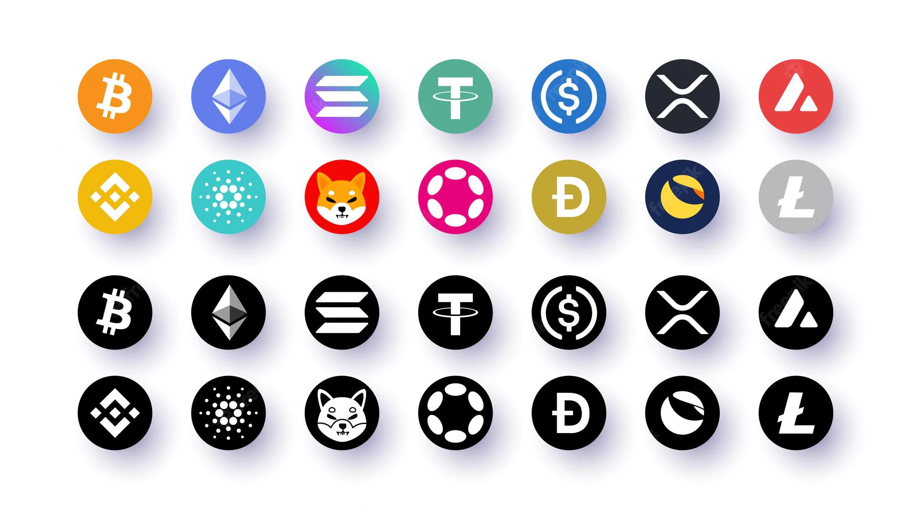
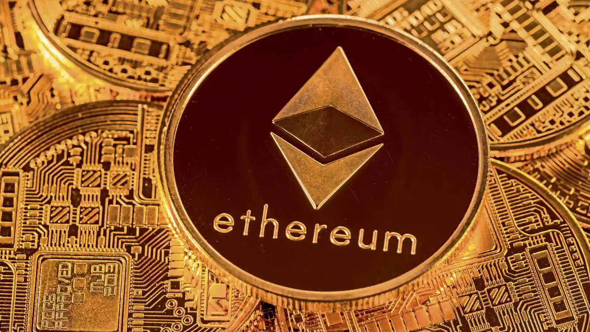

Cryptocurrency comes under many names. You have probably read about some of the most popular types
of cryptocurrencies such as Bitcoin, Litecoin, and Ethereum. Cryptocurrencies are increasingly
popular alternatives for online payments. Before converting real dollars, euros, pounds, or other
traditional currencies into ₿ (the symbol for Bitcoin, the most popular cryptocurrency), you should
understand what cryptocurrencies are, what the risks are in using cryptocurrencies, and how to
protect your investment.
Read more-
A cryptocurrency is an encrypted data string that denotes a unit of currency. It is monitored and
organized by a peer-to-peer network called a blockchain, which also serves as a secure ledger of
transactions, e.g., buying, selling, and transferring. Unlike physical money, cryptocurrencies are
decentralized, which means they are not issued by governments or other financial institutions.
Read more-

Cryptocurrencies are created (and secured) through cryptographic algorithms that are maintained and
confirmed in a process called mining, where a network of computers or specialized hardware such as
application-specific integrated circuits (ASICs) process and validate the transactions. The process
incentivizes the miners who run the network with the cryptocurrency.
Bitcoin, Ether, Litecoin, and Monero are popular cryptocurrencies.
Read more-
At its core, cryptocurrency is typically decentralized digital money designed to be used over the
internet. Bitcoin, which launched in 2008, was the first cryptocurrency, and it remains by far the
biggest, most influential, and best-known. In the decade since, Bitcoin and other cryptocurrencies
like Ethereum have grown as digital alternatives to money issued by governments.
Read more-
The most popular cryptocurrencies, by market capitalization, are Bitcoin, Ethereum, Bitcoin Cash and
Litecoin. Other well-known cryptocurrencies include Tezos, EOS, and ZCash. Some are similar to
Bitcoin. Others are based on different technologies, or have new features that allow them to do more
than transfer value.
Crypto makes it possible to transfer value online without the need for a middleman like a bank or
payment processor, allowing value to transfer globally, near-instantly, 24/7, for low fees.
Read more-